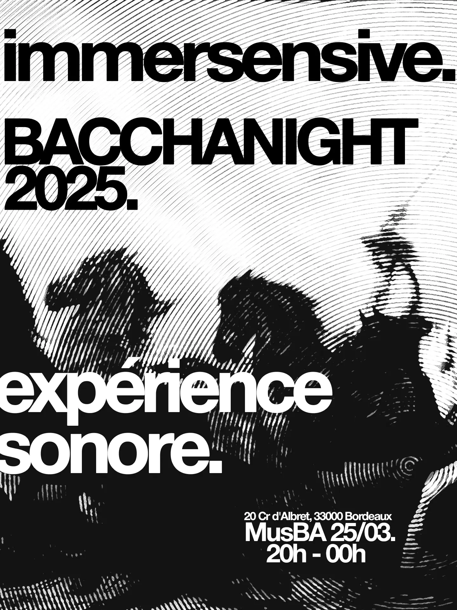
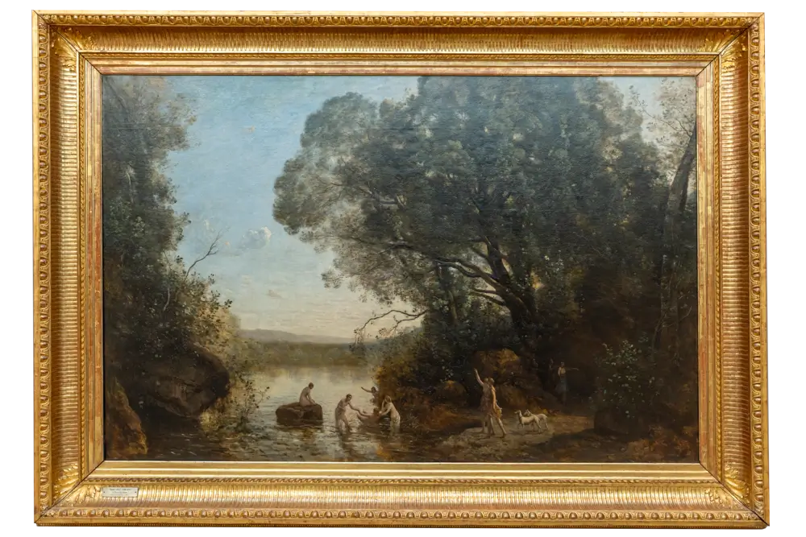
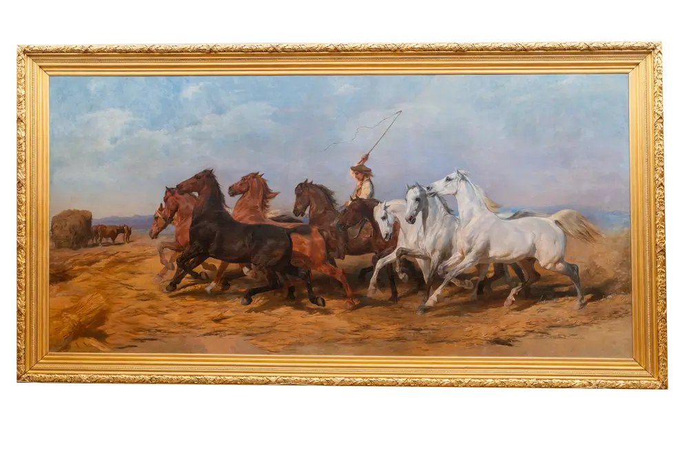

immersensive.
Bienvenue dans Immersensive. Ada va vous guider au long de cette expérience sensorielle.

LE BAIN DE DIANE

Votre navigateur ne supporte pas la lecture audio.
Ouvrir la transcription
LA FOULAISON DU BLÉ EN CAMARGUE

Votre navigateur ne supporte pas la lecture audio.
Ouvrir la transcription
×